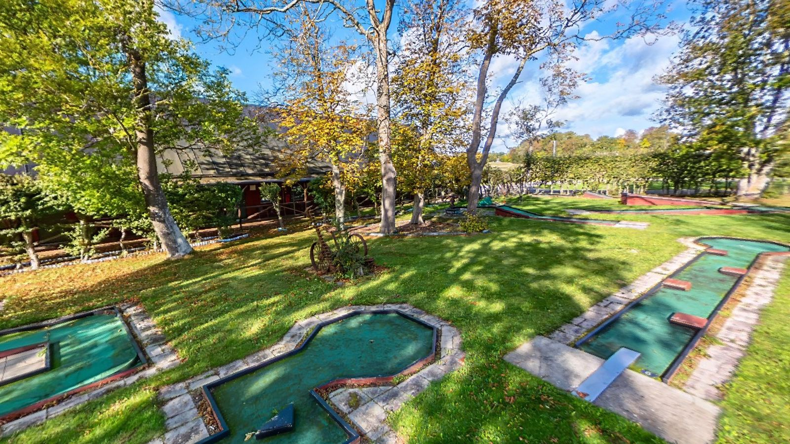

Gammeleksgården Mini golf
18 huller mini golf på landetgratis for vores gæster
En rolig bane på gården, få minutter fra E6. Tag en runde med børnene før middagen eller i aftensolen.

Gratis for vores gæster
Bor du på hotellet eller på autocamperpladsen, spiller du så meget, du vil, uden beregning.
Køller og bolde låner du i receptionen eller i kassen ved banen.


Minigolfen Minigolfbanen midt på gården.
Træk i billedet eller brug piletasterne. Pilene i billedet fører dig videre.
Banen
Se banen i 360°
Banen ligger midt på gården, få skridt fra receptionen og parkeringen.